PSTAT 234 (Fall 2025)
University of California, Santa Barbara
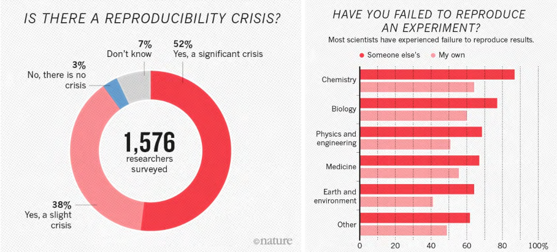
Reproducibility Crisis in Sciences (Baker 2016)
According to National Academies of Sciences et al. (2019) report:
Reproducibility is obtaining consistent results using the same input data; computational steps, methods, and code; and conditions of analysis: i.e., computational reproducibility.
Replicability is obtaining consistent results across studies aimed at answering the same scientific question, each of which has obtained its own data.
Even attaining computational reproduciblity is challenging (Pineau 2018; Crane 2018).
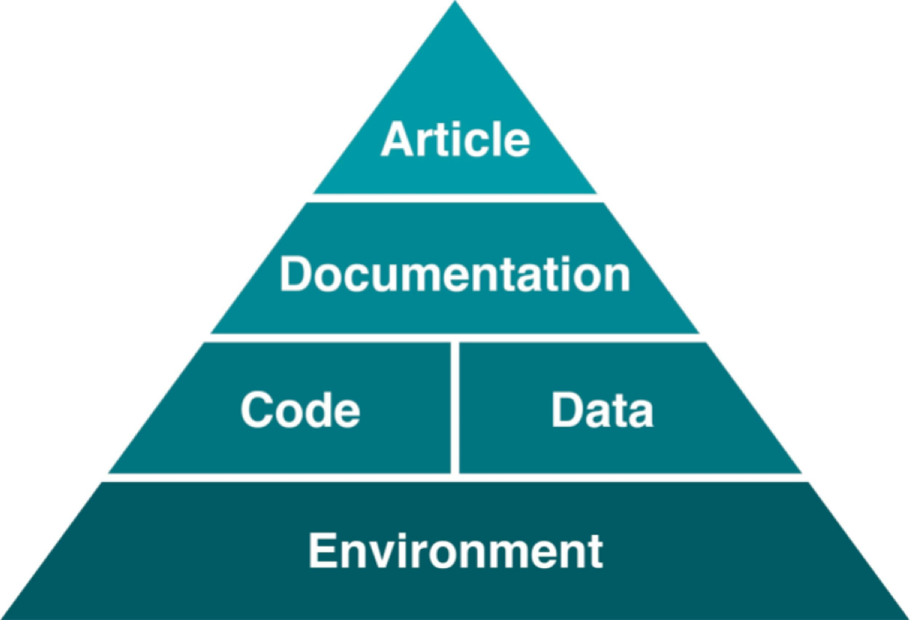
Consists of infrastructure, system, and packages
Software installations can be challenging
How do we create a stable computational environment?
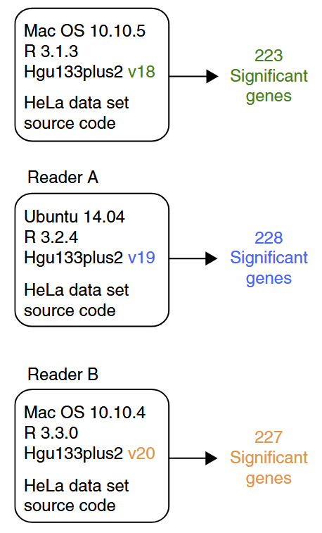
Many factors may affect computational reproducibility and are often outside the researchers’ area of expertise.
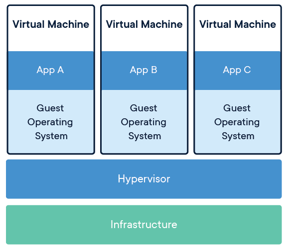
Virtual machines (image source: Wikimedia Commons)
Challenges with virtual machines:
Hard to integrate into modern collaborative workflows
Modern computing tools can isolate computational environments.
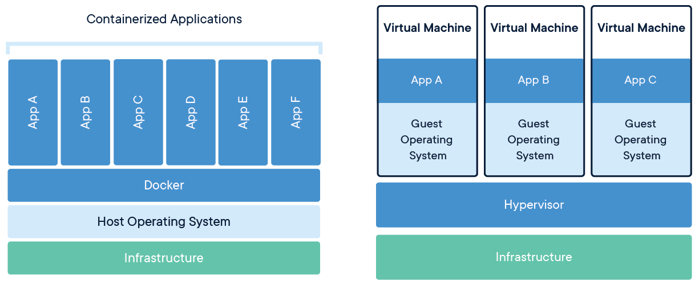
Containers (left) vs. virtual machines (right) (image source: Wikimedia Commons)
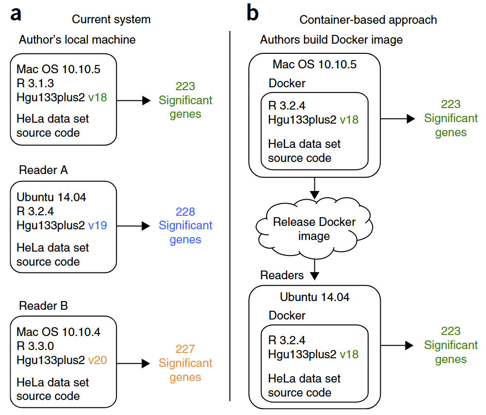
Beaulieu-Jones and Greene (2017)
Containers are lightweight, isolated environments that can be shared easily.
Dockerfile).Dockerfile (or Containerfile) can be version controlled.Example containers:
| Container URL | Notes |
|---|---|
| docker.io/ubuntu:22.04 | Official Ubuntu 22.04 base image |
| docker.io/intel/oneapi:latest | Intel oneAPI tools and libraries |
| docker pull mathworks/matlab:r2025a | MATLAB container (requires license) |
| quay.io/jupyter/r-notebook:r-4.4.2 | Jupyter Notebook with R pre-installed |
| nvcr.io/nvidia/pytorch:24.12-py3 | NVIDIA PyTorch with GPU support |
Example containers:
| Container URL | Notes |
|---|---|
| docker.io/ubuntu:22.04 | Official Ubuntu 22.04 base image |
| docker.io/intel/oneapi:latest | Intel oneAPI tools and libraries |
| docker pull mathworks/matlab:r2025a | MATLAB container (requires license) |
| quay.io/jupyter/r-notebook:r-4.4.2 | Jupyter Notebook with R pre-installed |
| nvcr.io/nvidia/pytorch:24.12-py3 | NVIDIA PyTorch with GPU support |
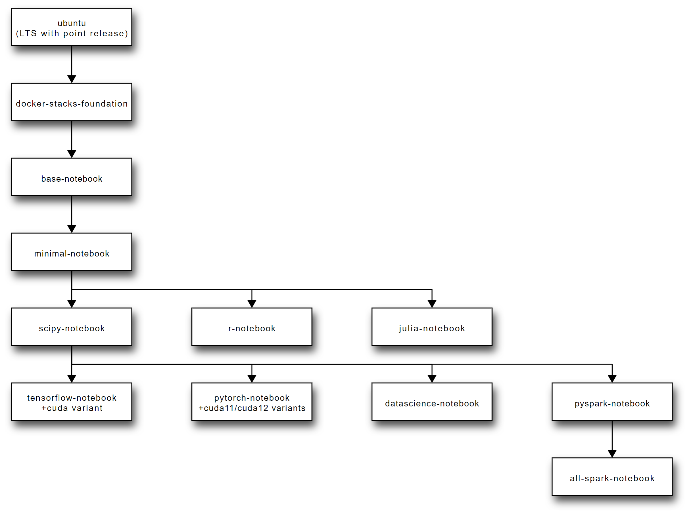
Jupyter Docker Stacks are ready-to-run Docker images containing Jupyter and related applications.
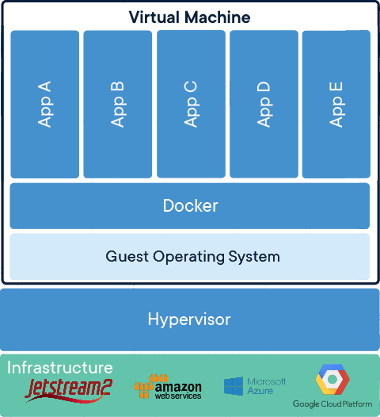
Virtual machine running containerized applications
In practice, using containers directly is difficult.
Visual Studio Code (VS Code) can simplify remote computing usage!
Beyond code editing, VS Code has features that helps.
Development containers with VS Code simplify container management.
Linux Host can be a local or remote virtual machine on a cloud platform.
Project Files represent your own project files.
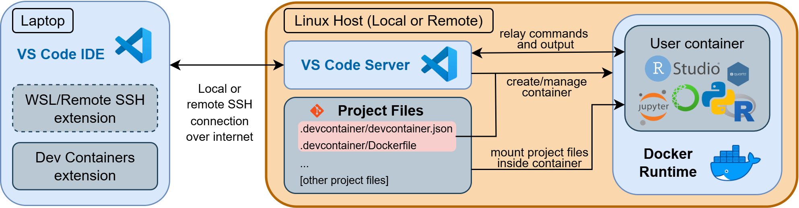
Development containers diagram
GitHub Codespaces is a cloud-hosted development containers platform.
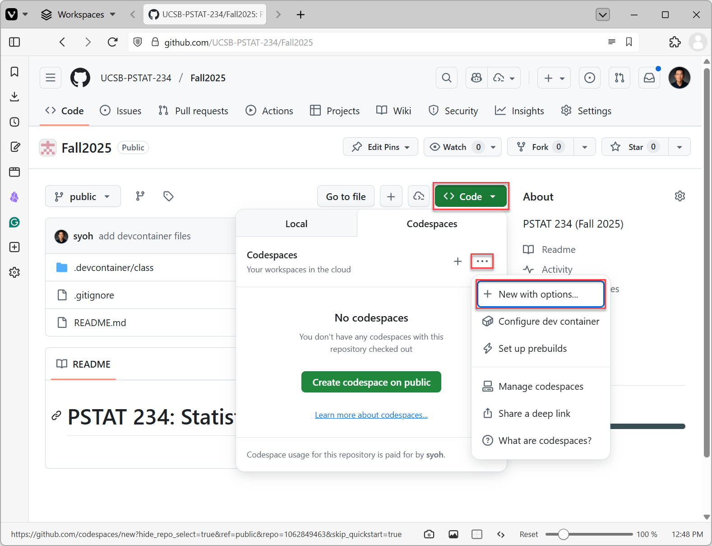
GitHub Codespaces Options
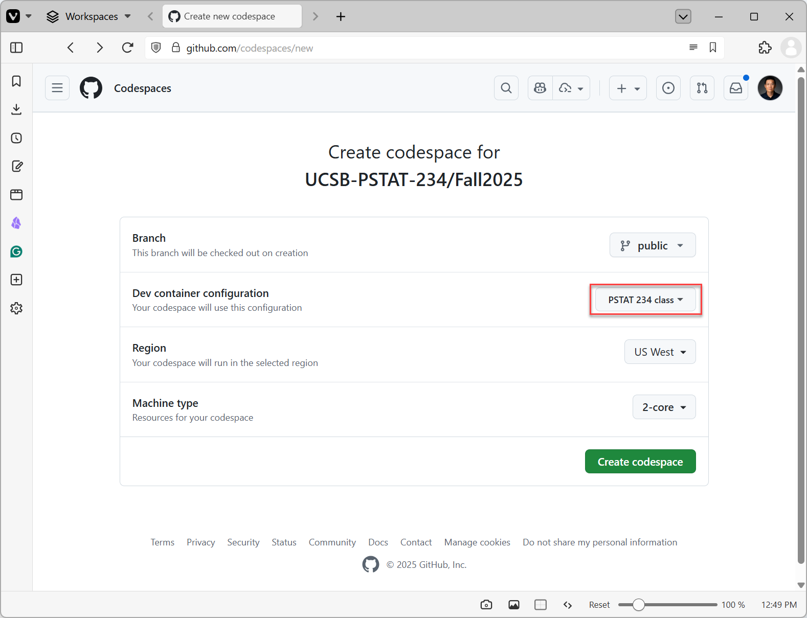
GitHub Codespaces Create
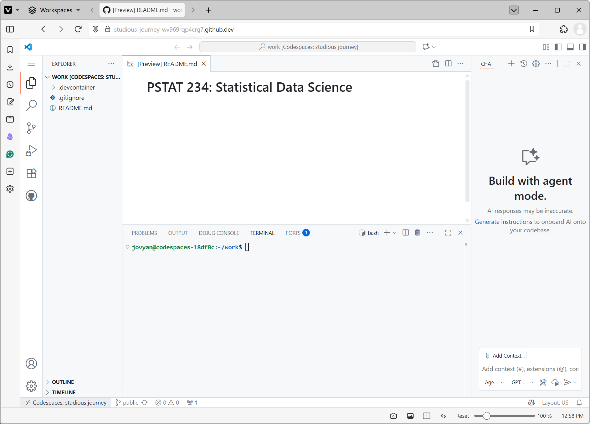
GitHub Codespaces User Interface
Assignments due next week (details on Canvas and Syllabus):
Also:
{kind=link}